Wink Self Photo Studio
Edición Piloto · 15 Poses
Wink Self Photo Studio
Edición Piloto · 15 Poses
Wink Self Photo Studio
Edición Piloto · 15 Poses
Wink Self Photo Studio
Edición Piloto · 15 Poses

El manual práctico para sentirte relajado/a, estilizar tu figura y conseguir fotos naturales y con actitud editorial.
Nunca aprietes los brazos contra tu cuerpo. Dejar unos centímetros de aire entre tus brazos y tu cintura estiliza la figura al instante y transmite soltura.
Para definir la mandíbula y evitar sombras incómodas bajo el cuello, empuja suavemente el mentón hacia adelante y baja la mirada apenas 1 centímetro. Se siente exagerado al inicio, pero en cámara queda perfecto.
El 90% de la rigidez en una foto se nota en las manos. Mantené los dedos separados, suaves y curvados. Si tocás tu cara o ropa, solo rozá con la yema de los dedos sin apoyar peso.
En nuestro estudio vos controlás el momento exacto de la foto. Podés sostener el control en la mano que queda fuera de cuadro, esconderlo detrás de la pierna o usar los 2 segundos de retardo para adoptar la pose con ambas manos libres.
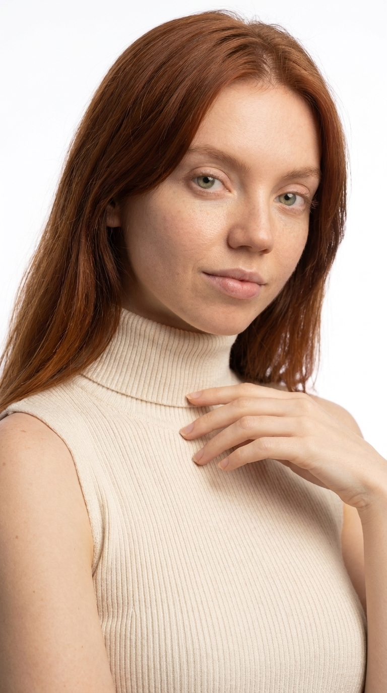
Mano suave apoyando solo la yema de los dedos en la clavícula. Dedos curvos y muñeca relajada, nunca en garra.
Girá los hombros en ángulo de 30° a 45° respecto al lente. Baja los hombros para alargar visualmente el cuello.
Mirada directa al lente, labios levemente entreabiertos y sonrisa suave para evitar tensión en la mandíbula.
Inhala hondo y exhala por la boca justo antes del clic: tus hombros van a caer a su posición más natural.
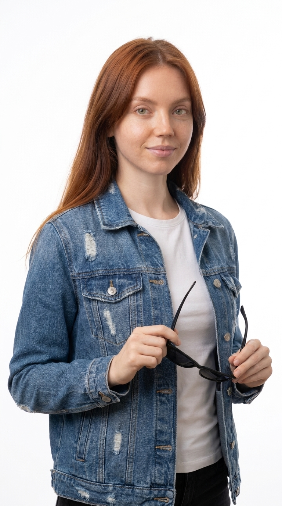
Sostené unos lentes, una flor o un prop con una mano a la altura del pecho. La otra mano queda relajada al costado.
Pasa el peso de tu cuerpo a la pierna trasera. Esto genera una curva natural en la cadera (forma de 'S') muy favorecedora.
Mirá apenas por encima del lente o hacia un costado como si estuvieras pensando en algo divertido.
Los props son el mejor aliado para romper la rigidez en los primeros minutos de tu sesión.
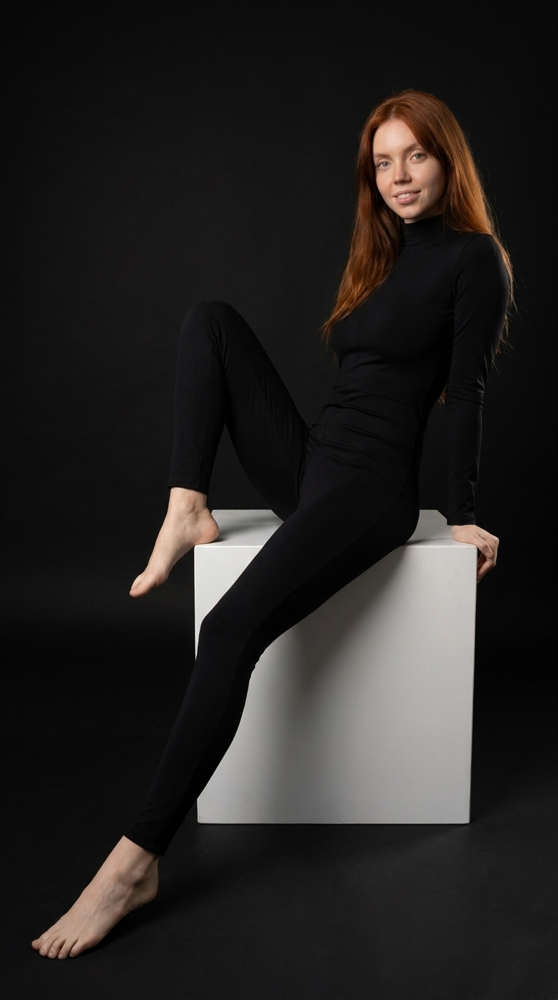
Una mano apoya en el borde del cubo para sostener la postura. La otra descansa relajada sobre el muslo.
Sentate en la orilla exterior del cubo (nunca al fondo). Estirá una pierna hacia la cámara: esto alarga las piernas visualmente.
Espalda recta, hombros hacia atrás. Postura firme que proyecta seguridad sin verse acartonada.
El fondo negro resalta las siluetas y la ropa clara. Ideal para un lookbook moderno y sofisticado.
Una mano acomodando el cuello de la remera, camisa o tocando el reloj. Mostrá el dorso de la mano, no la palma.
Girá la cabeza en 3/4. Adelantá el mentón 1 cm hacia el lente para tensar la piel y marcar la línea de la mandíbula.
Mirada firme a la cámara. Expresión neutra o media sonrisa sobria.
El disparador lo podés tener en la otra mano por debajo del encuadre listo para disparar en ráfaga.
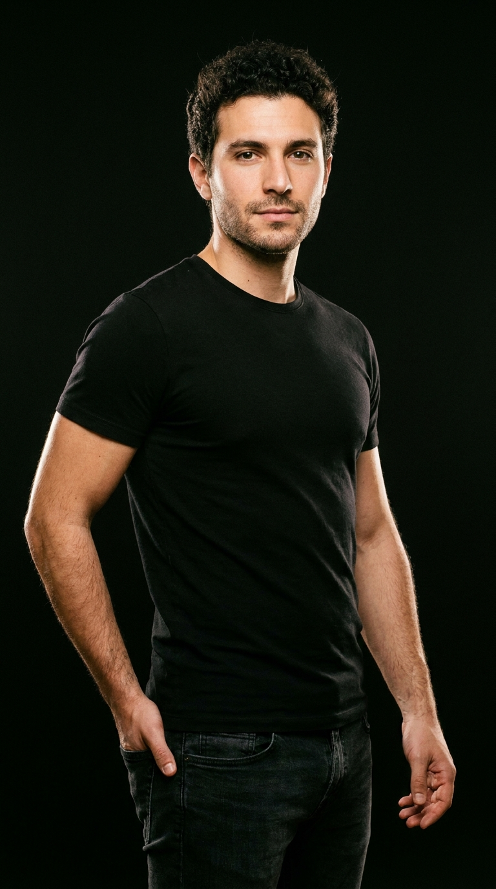
Mano en el bolsillo del pantalón (dejá el pulgar afuera o adentro, lo que sientas más cómodo). El otro brazo descansa suelto.
No te pares de frente como en foto de DNI. Gira el torso 30°: ensancha los hombros y estrecha la cintura.
Relajá la frente y separá apenas los labios para evitar tensión mandibular.
En fondo oscuro, la luz de estudio recorta los hombros y da un estilo comercial impecable.
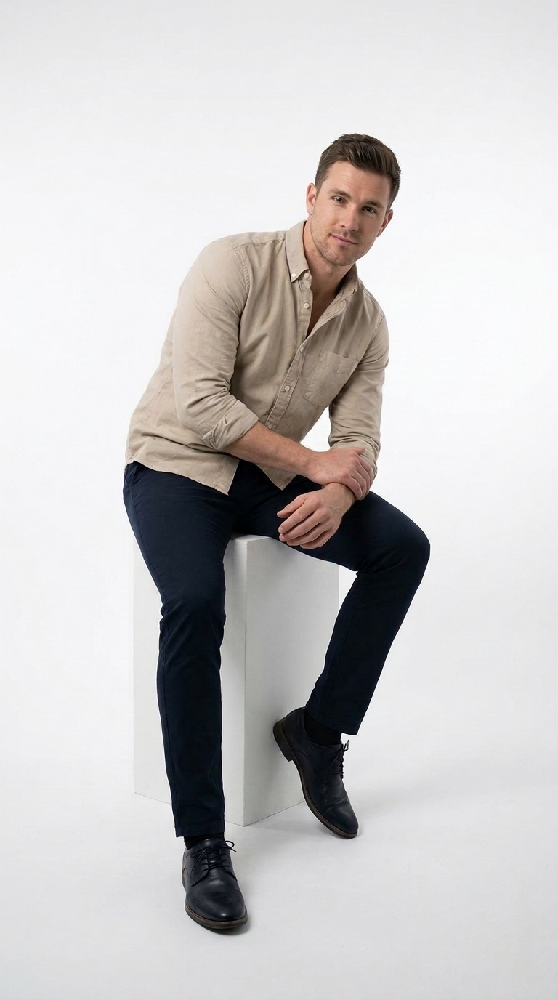
Codos apoyados con suavidad en las rodillas. Manos entrelazadas o juntas al frente en posición relajada.
Incliná el torso levemente hacia adelante hacia la cámara. Esto acorta la distancia visual y da energía a la foto.
Pies bien apoyados en el suelo, piernas separadas al ancho de los hombros.
Sentarse recostado hacia atrás achica el cuerpo; inclinarse hacia el lente siempre te hace ver más grande y seguro.
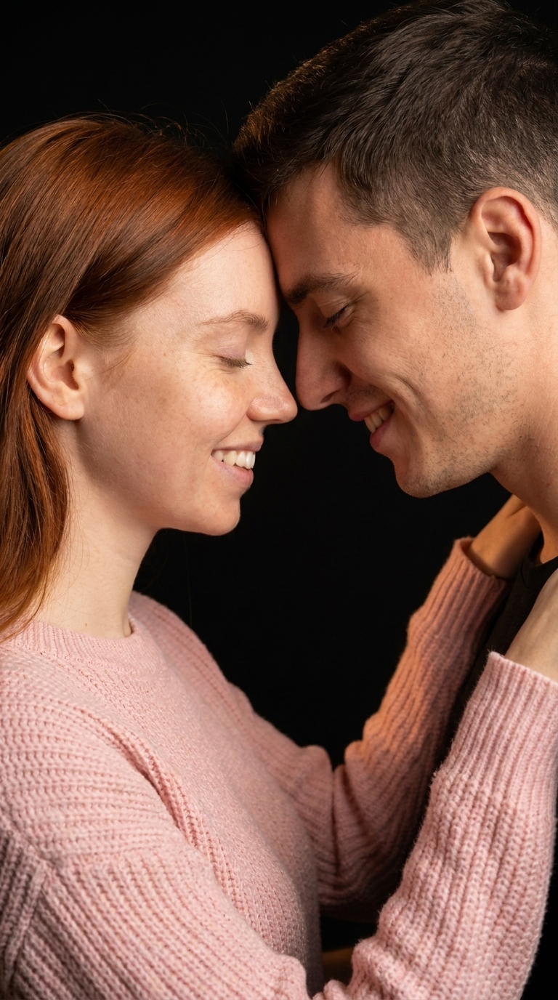
Una mano acariciando el cuello, mejilla o apoyada suavemente en la nuca de la otra persona.
Junten suavemente las frentes dejando un pequeño aire entre las narices para que la luz del estudio ilumine ambos rostros.
Ojos cerrados suavemente o mirándose a los labios con una sonrisa espontánea.
Díganse un chiste tonto al oído en voz baja: la risa que surge de ese susurro es la foto perfecta.
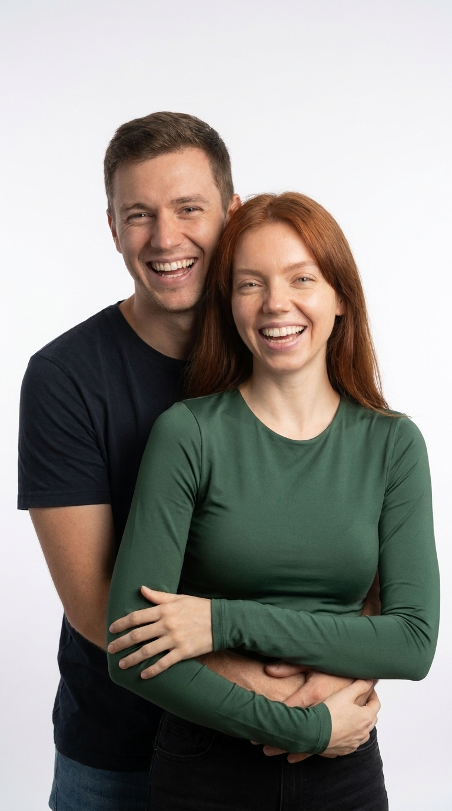
Uno rodea la cintura o costillas del otro desde atrás. Las manos entrelazadas al frente sin apretar.
La persona de adelante gira levemente la cabeza hacia atrás, apoyando la mejilla cerca del hombro de su pareja.
Miradas compartidas a la cámara con carcajada espontánea.
La persona de atrás puede hacer una pequeña cosquilla rápida antes de disparar para generar esa sonrisa fresca.
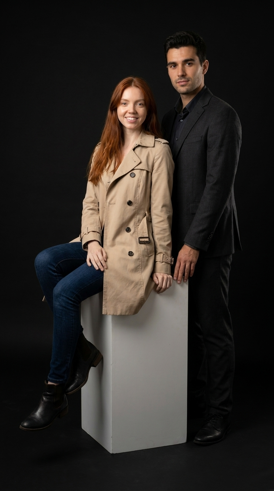
Quien está de pie apoya una mano en el hombro de quien está sentado. La otra mano puede ir al bolsillo.
Uno sentado en el cubo y el otro de pie a su lado. Esta diferencia de altura rompe la monotonía y crea un triángulo visual perfecto.
Mirada seria, segura y elegante directa al lente.
Ropa coordinada en tonos neutros (negro, blanco o beige) eleva esta foto a nivel de campaña profesional.
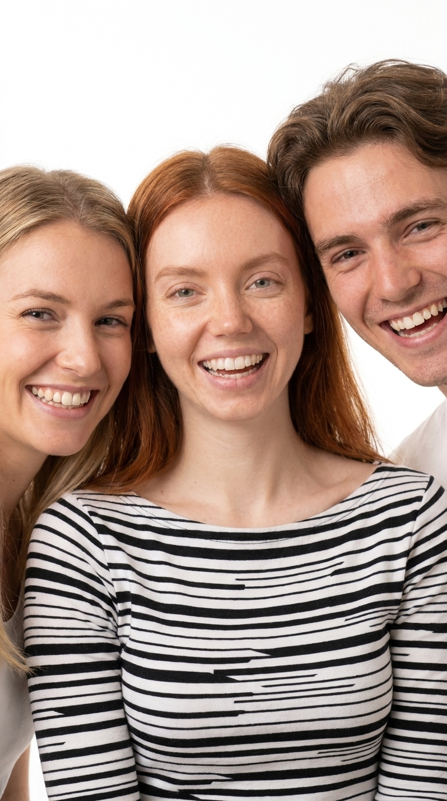
Brazos entrelazados por detrás de la espalda o manos en los hombros del compañero.
Rompan el espacio personal: inclínense todos hacia el centro. Cuanto más juntos estén los rostros, más afecto transmite la foto.
Carcajadas abiertas, frentes rozándose o sonrisas mirando al lente desde el mismo plano.
Hagan 3 disparos seguidos mientras cuentan un recuerdo divertido: la tercera foto siempre sale perfecta.
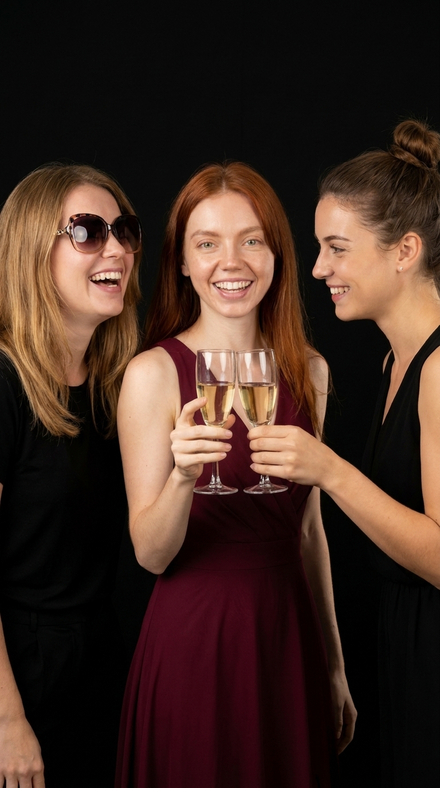
Sosteniendo copas de brindis, lentes divertidos de fiesta o accesorios temáticos de cotillón.
Hagan el gesto de chocar las copas o mirar a la cámara como diciendo "¡salud!". Dinamismo activo en lugar de pose estática.
Alegría desbordante, sonrisas amplias y miradas llenas de festejo.
En Wink Studio podés traer tus propios props y bebidas para recrear tu previa o tu festejo con luces de estudio.
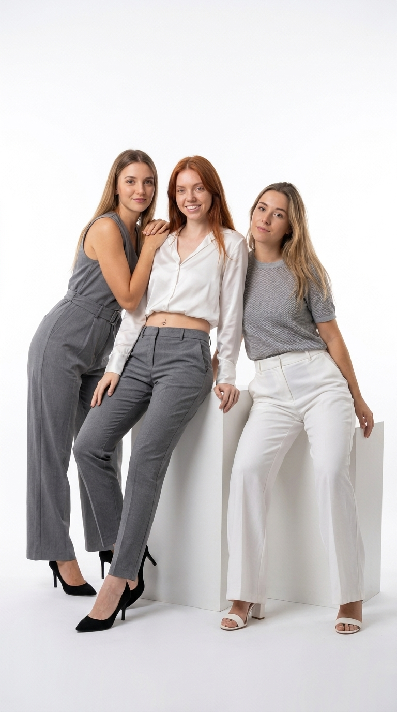
Uno con manos en bolsillos, otro apoyando codos en el bloque y el tercero con brazos relajados.
Un amigo arriba del cubo, otro sentado en el piso apoyado en la base, y otro de pie al centro. ¡Cero cabezas alineadas!
Estilo banda de música o portada de revista: actitud segura, fresca y canchera.
Nunca se paren en fila como soldados; jugar con los bloques del estudio hace que la foto parezca de catálogo profesional.
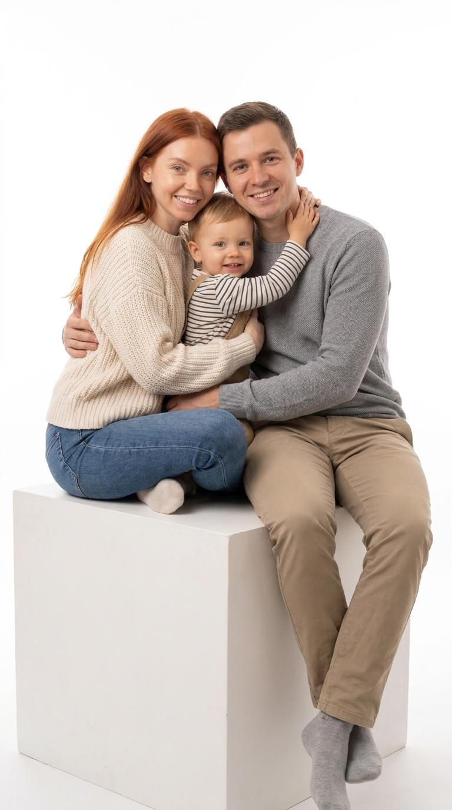
Padres rodeando al niño con brazos envolventes. Manos entrelazadas o reposando en los hombros.
Los padres enmarcan a los hijos en el centro del cubo. Todos a una distancia compacta para generar calidez.
Sonrisas abiertas mirando a la cámara, sintiendo la comodidad del momento.
Al estar en un estudio privado sin fotógrafo mirando, los chicos se sienten jugando y sonríen con total naturalidad.
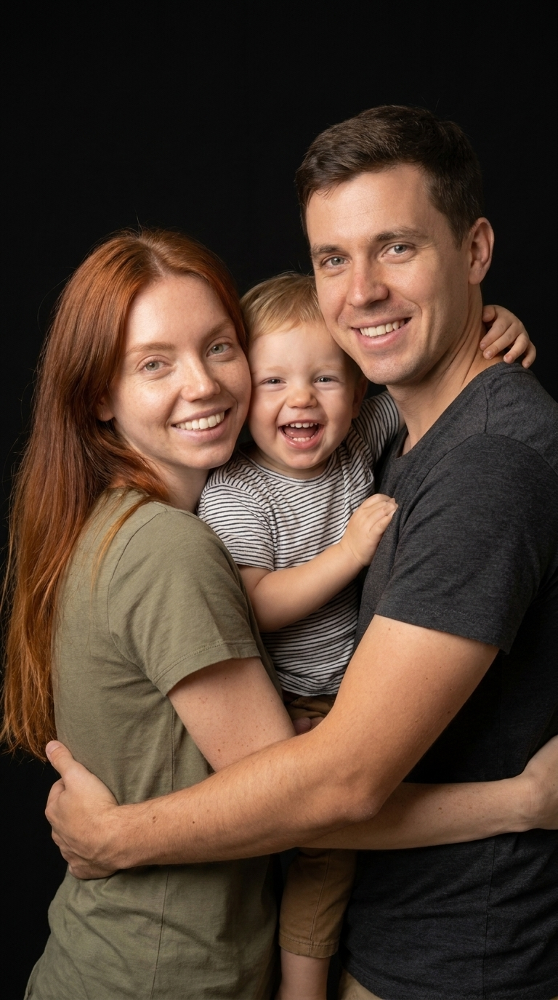
Brazos envolventes que sostienen al pequeño al centro, transmitiendo contención y amor.
Rostros de los padres inclinados hacia las mejillas del niño, compartiendo el mismo plano focal.
Alegría espontánea y tierna, rostros relajados con luz suave de estudio.
El fondo negro da un acabado editorial que hace resaltar las expresiones y las miradas de los ojos claros.
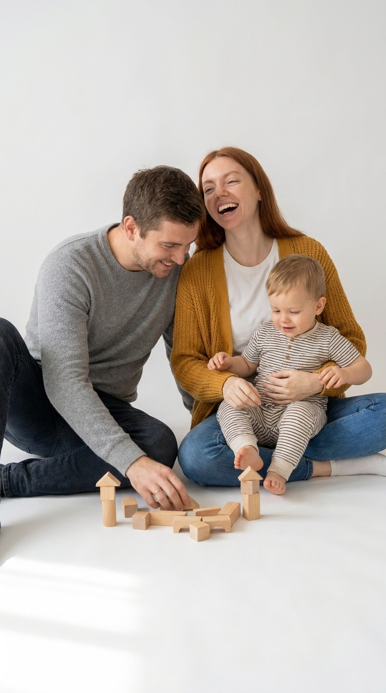
Jugando libremente, haciéndose cosquillas o tomados de las manos en el piso.
Sentados de forma informal en el piso del estudio, sin preocuparse por la rigidez de la espalda.
Mírense entre ustedes en lugar de mirar al lente. Olvídense de la cámara por un segundo.
Dejá el disparador en modo ráfaga en el piso y hacé clic mientras juegan: de 10 fotos, 3 van a ser obras de arte.
Ahora que conocés las posturas, los ángulos y los trucos para tus manos, vení a vivirlos a nuestro estudio privado o llevá la cabina interactiva a tu próximo evento.
30 minutos en un estudio exclusivo para vos, sin fotógrafo mirándote, con control remoto inalámbrico, pantalla en vivo y cambio de outfit.
Reservá tu Sesión por WhatsApp